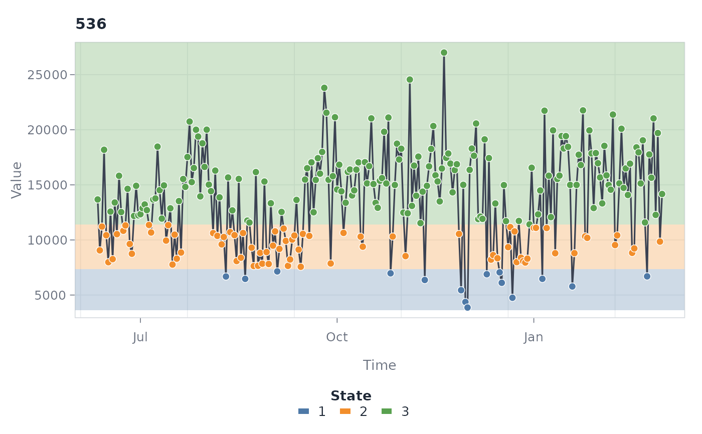
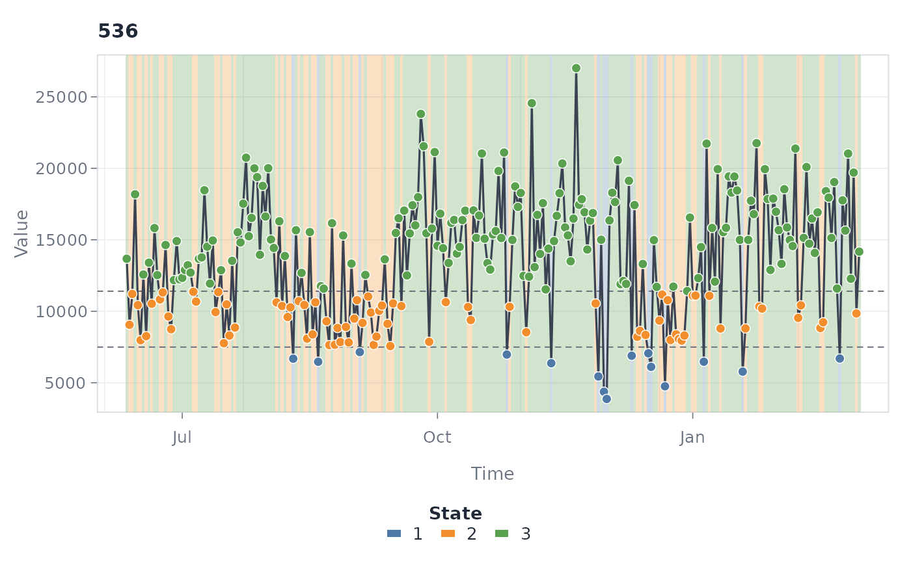
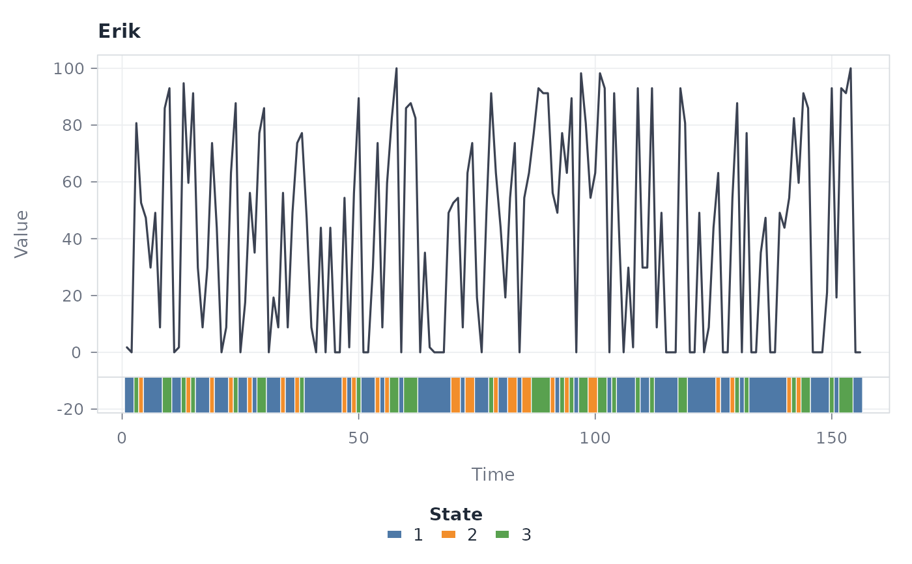
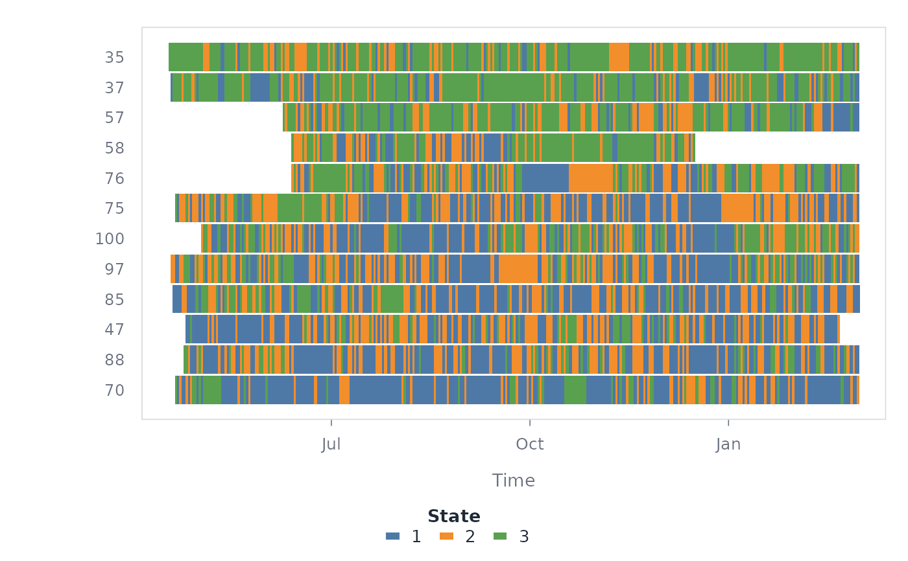
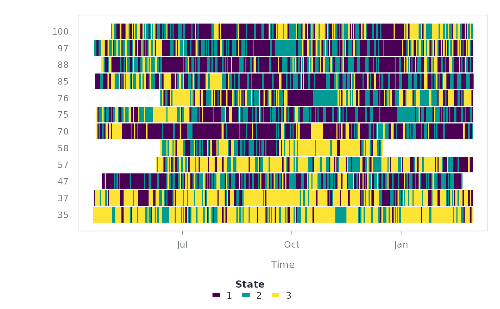
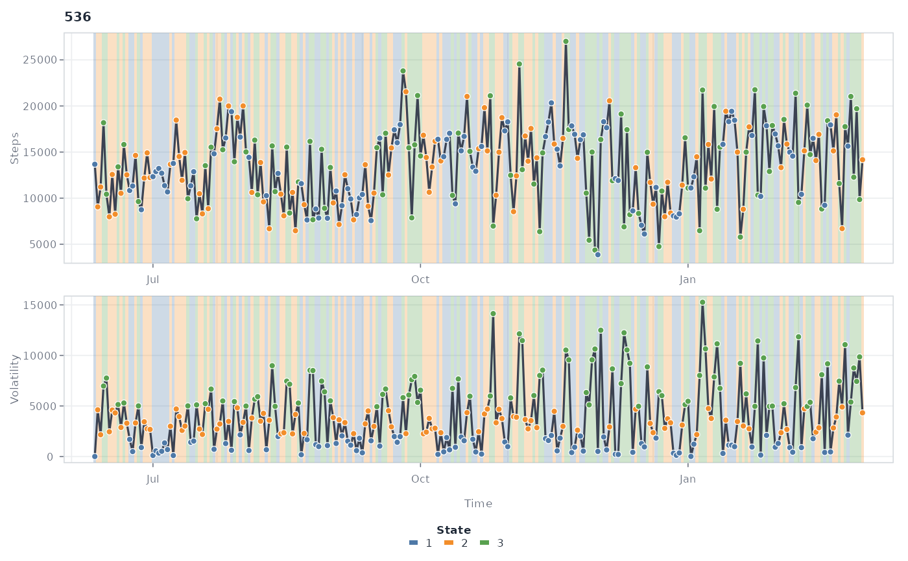

Four views of a discretized series, selected with type. "overlay"
(default) draws each series with translucent state shading behind it;
"ribbon" keeps the series clean and runs a state-classification strip
underneath it instead; "heatmap" draws one row per series with one
coloured tile per observation, which scales to many series where the
faceted views do not; "stack" places an aligned companion series above
the discretized series.
Usage
# S3 method for class 'tsn_states'
plot(
x,
type = c("overlay", "ribbon", "heatmap", "stack"),
series = NULL,
overlay = c("horizontal", "vertical", "none"),
lines = "none",
min_run = 1L,
points = TRUE,
max_series = NULL,
columns = NULL,
palette = NULL,
alpha = NULL,
line_color = "#3B4252",
line_width = 1.6,
point_size = 1,
strip_height = 0.1,
sort = "none",
border = FALSE,
with = NULL,
with_label = "Series",
shade = TRUE,
color_line = FALSE,
ribbons = NULL,
ribbon_label = "States",
legend = TRUE,
xlab = "Time",
ylab = "Value",
cex = 1,
grid = TRUE,
background = "#FFFFFF",
...
)Arguments
- x
A
tsn_statesresult.- type
The view:
"overlay","ribbon","heatmap", or"stack". The stack view draws a companion series (with) above the discretized series with BOTH panels vertically shaded by the discretized states — e.g. the original time series read against the states of its rolling complexity.- series
Optional character vector of series IDs to display.
- overlay
Colour shading for the overlay view:
"horizontal"(default; value bands),"vertical"(time runs), or"none".- lines
Dashed guide lines complementing the shading:
"horizontal"draws grey lines at the state boundaries (the discretization breaks when available, empirical boundaries otherwise). Transformed and magnitude-space breaks are converted back to the raw signed value axis; adaptive local boundaries are omitted."vertical"draws a line at each state transition (filtered bymin_run) in the colour of the state that starts there — a green dashed line means the green state begins at that point and runs until the next line;"both", or"none"(default). Combine one shading direction with dashed lines in the other, e.g.overlay = "horizontal", lines = "vertical".- min_run
For
lines = "vertical": only transitions into a state persisting at leastmin_runobservations get a line.- points
Whether to draw observations over each line.
- max_series
Maximum number of series to draw (
25for the heatmap,10otherwise).- columns
Number of panel columns.
- palette
State colours:
NULLfor the default palette, a preset name ("default","okabe","viridis","cool","warm","pastel","dark"), a named colour vector keyed by state, or a plain colour vector.- alpha
Shading opacity for the overlay view.
- line_color
Series line colour.
- line_width
Series line width.
- point_size
Observation point size.
- strip_height
Height of the ribbon strip as a fraction of the panel.
- sort
Heatmap row order:
"none","mean"(by series mean value), or"state"(group rows by modal state).- border
Whether heatmap tiles carry a thin separator border.
- with
For
type = "stack": a finite numeric vector aligned with the rows ofxgiving the companion series (e.g. the original values whenxdiscretizes a derived series).- with_label
Y-axis title of the companion panel.
- shade
For
type = "stack": whether to draw the vertical state shading on both panels.- color_line
For
type = "stack": colour each line segment by the state at its left endpoint instead of drawing a neutral line.- ribbons
For
type = "ribbon": an optional NAMED list of additional classifications to stack below the series — each element atsn_states, atrend()result, or a character/factor vector aligned with the selected series. The object's own states form the first strip (labelledribbon_label); one series at a time. This is the resilience-style multi-ribbon view: the series read against several classifications at once, each strip labelled on the axis with its own legend row.- ribbon_label
Strip label for the object's own states in the multi-ribbon view.
- legend
Whether to draw the legend row.
- xlab, ylab
Axis titles.
- cex
Global text size multiplier.
- grid
Whether to draw the background grid.
- background
Panel background colour.
- ...
Reserved for future options.
Examples
data(steps)
complete <- subset(steps, !is.na(steps))
states <- discretize(
complete,
value = "steps", id = "id", time = "day",
method = "quantile", n_states = 3
)
plot(states, series = "536")

plot(states, series = "536", overlay = "vertical", lines = "horizontal")

plot(states, "ribbon", series = "536", points = FALSE)

plot(states, "heatmap", max_series = 12, sort = "mean")

plot(states, "heatmap", palette = "viridis", max_series = 12)

# Stack: original series read against the states of its rolling volatility.
one <- subset(complete, id == 536)
volatility <- abs(c(0, diff(one$steps)))
vol_states <- discretize(
data.frame(id = one$id, day = one$day, vol = volatility),
value = "vol", id = "id", time = "day",
method = "quantile", n_states = 3
)
plot(vol_states, "stack", with = one$steps, with_label = "Steps",
ylab = "Volatility")
